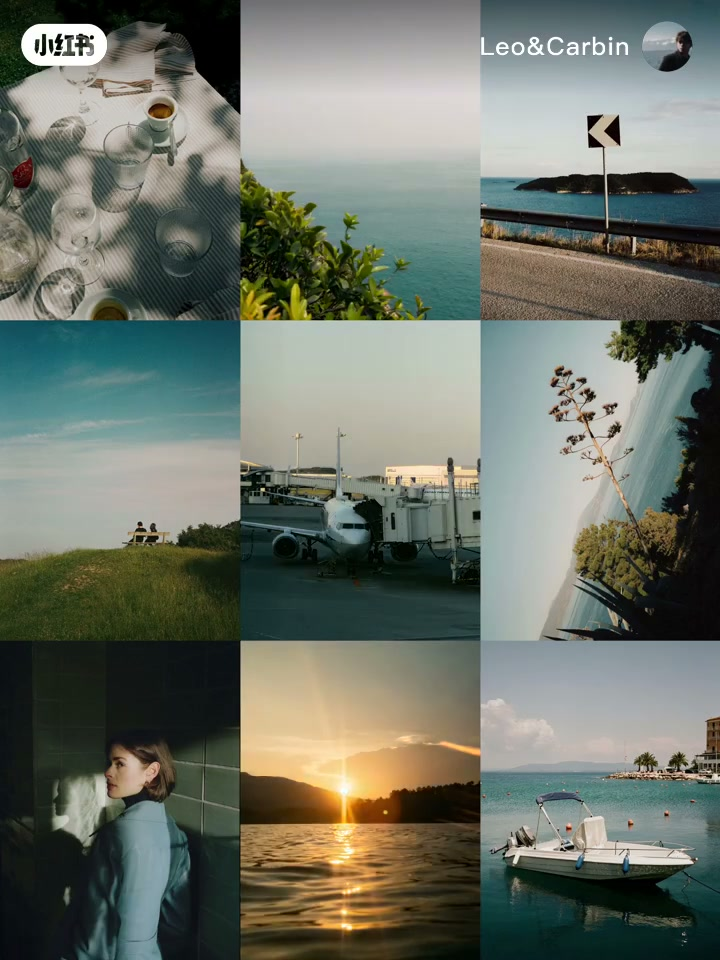
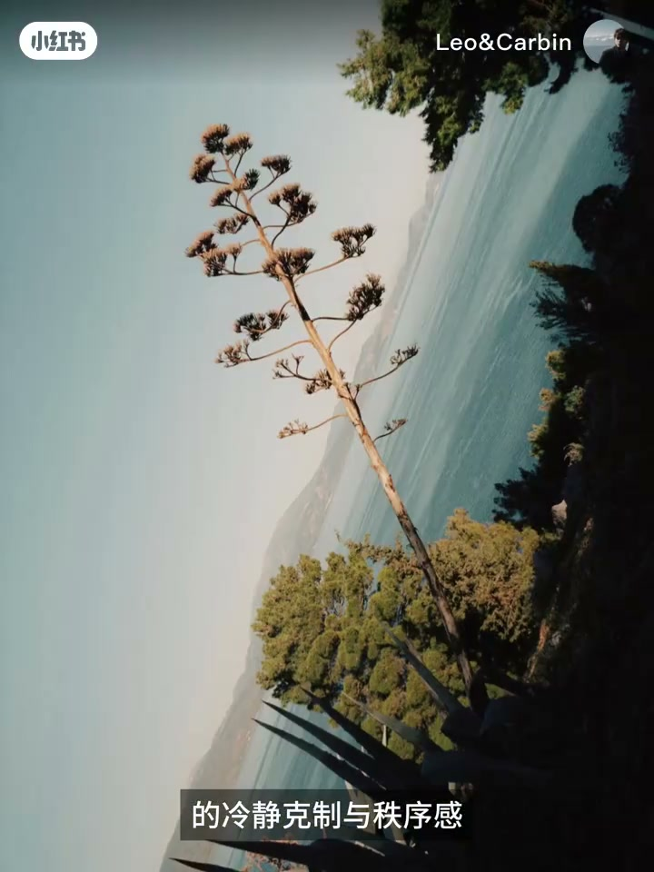
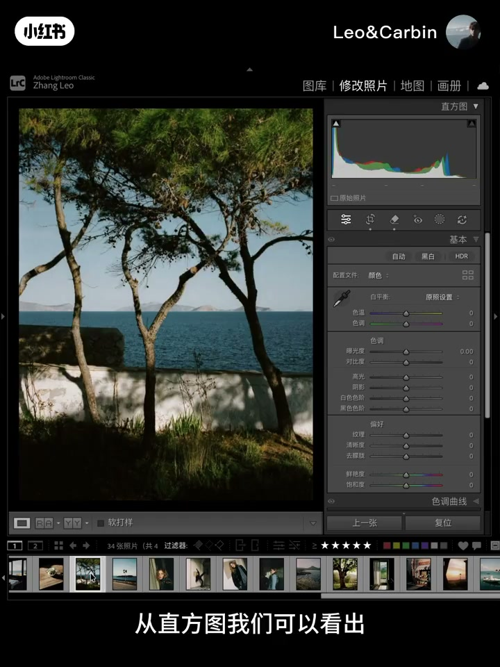
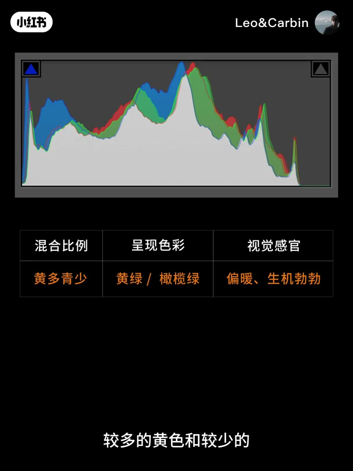
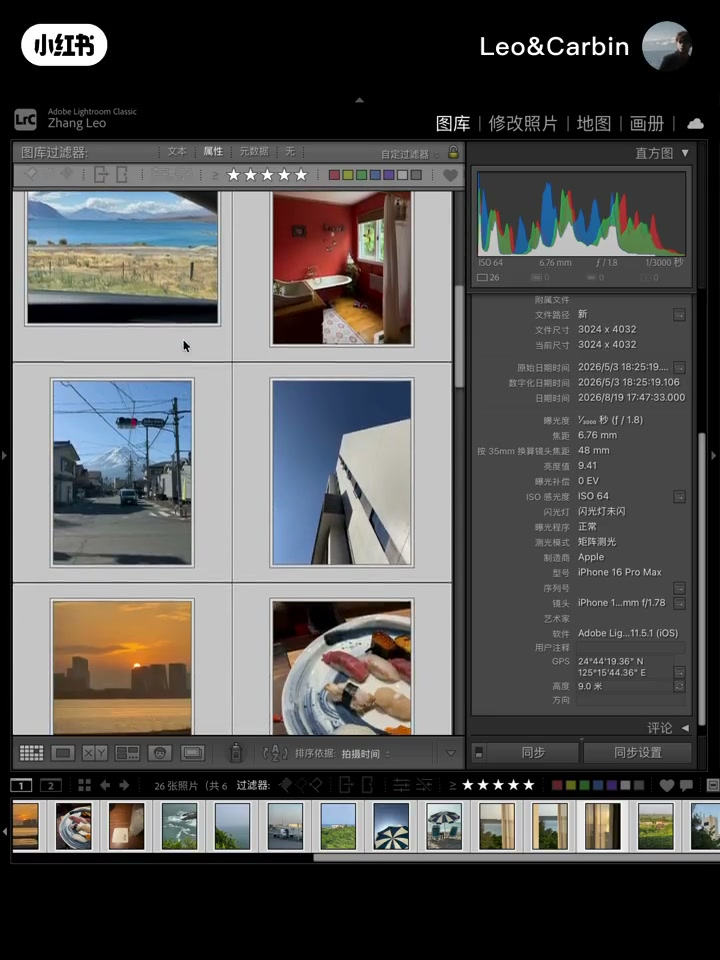
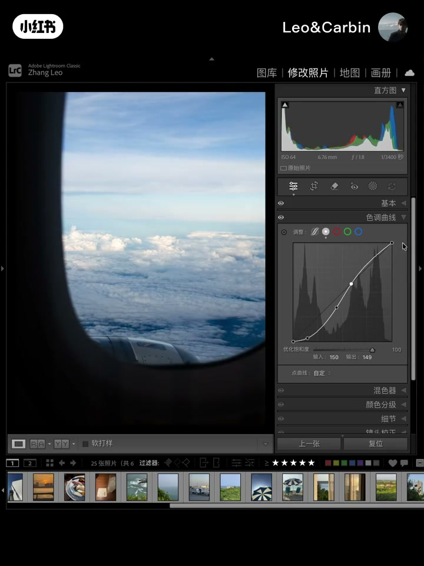
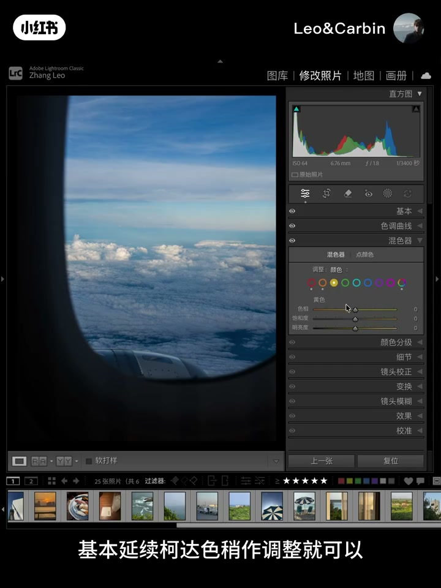
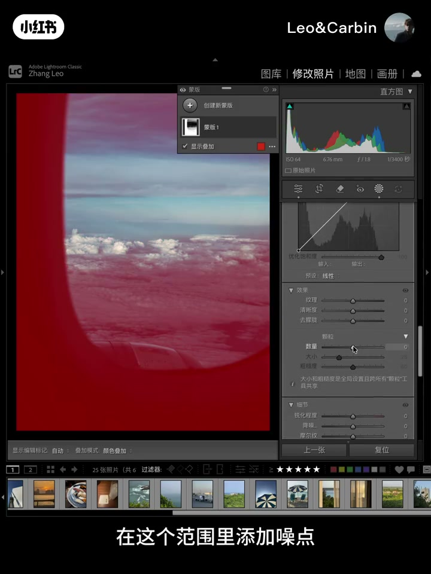
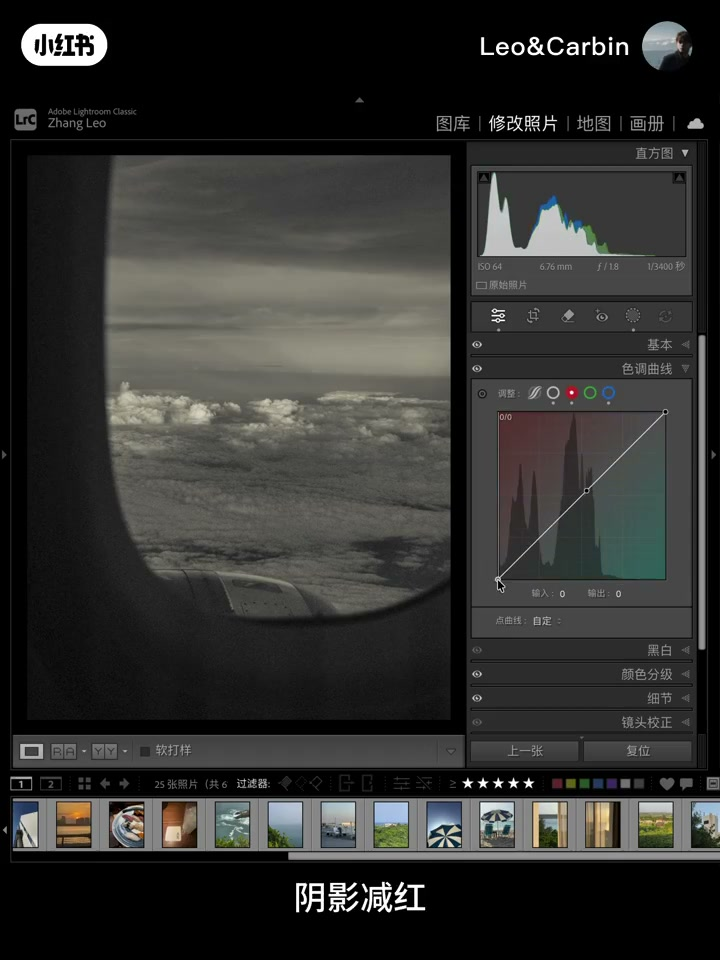
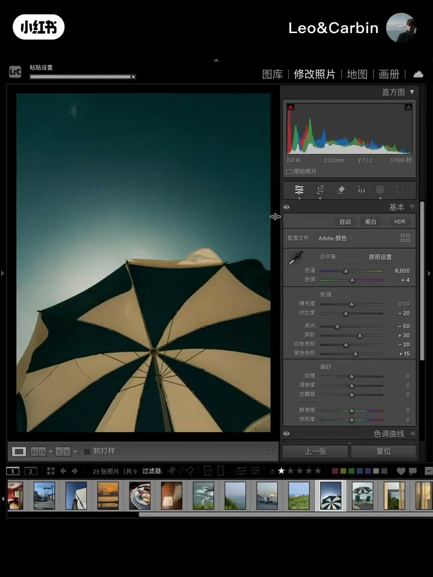

内容要点
摄影博主 Leo《迷人仿色教程》第14期，拆解德国摄影师 Morris Pell：冷静克制的德系秩序感里揉进松弛生活气息，影调暗部深邃、高光克制，色调保留柯达暖底并在阴影注入橄榄绿。全程在 Lightroom 走「曲线/基础铺影调→混色校准→亮度蒙版噪点与高光晕开→曲线减色+颜色分级加色」，并强调参数必须能复用到一组手机片才算风格成立。
知识结构
完美仿色钩子后介绍第14期：Morris Pell=德系冷静克制+松弛生活气息；暗部影调打底，胶片质感与现代都市结合。
非原生柯达而是复古低调重塑；暗部深邃、高光克制有富余；暖黄是胶片底色，后期刻意加青→阴影橄榄绿；高光加减色先卖关子。
顺序：基础影调→混色校准→胶片灵魂三件套（注色/噪点/高光）置后；一张成功不算数，参数能复用才算风格。
Adobe 颜色；曲线压黑场、克制亮部；基础降对比与曝光；混色黄绿偏橄榄绿、蓝略偏青；校准复古调和，关锐化备加噪。
均匀加噪像蒙网；用明亮度范围蒙版按暗→亮分区加噪；高光蒙版降清晰度模拟乳液层晕开。
高光优先减蓝而非加黄；阴影减红；曲线减色+分级加色（阴影黄 S20、高光橙红）；色调要渗入须曲线注色。
复制到同组片只微调亮度即有质感；预设合集邀约；迷人仿色系列持续解析 ins 摄影师。
Morris Pell 仿色的硬核不是抄滑块，而是结构：先用曲线与基础做出深邃克制影调，混色把绿推向橄榄绿并略加青，再用亮度蒙版做出「非均匀」胶片颗粒与高光晕开，最后用曲线减色（减蓝/减红）把暖调渗进画面，颜色分级做小范围加色收束。验收标准仍是复制到同组手机片时几乎只动亮度。
00:00-00:57第14期立题：Morris Pell 德系克制与松弛
开场用成片钩子：「记住这个色调……这就是完美的仿色。」Leo 自报摄影博主，点明本期是《迷人仿色教程》第14期，目标是拆德国摄影师 Morris Pell，并在 Lightroom 完成仿色。
风格定位：极为纯正的德系质感——保留冷静、克制与秩序感，又揉入随性松弛的生活气息；以沉稳收敛的暗部影调打底，把复古胶片色彩与现代都市结合，用色彩与光影构建情绪空间。


00:57-02:17影调色调：深邃暗部、柯达暖底、阴影橄榄绿
器材与胶片：长期徕卡+柯达，但成片不是原生柯达，而是重塑后的复古低调柯达。直方图上暗部深邃、高光克制，即使户外充足光，高光仍有富余。
色调上柯达偏暖底色仍在：阴影蓝通道凸出→蓝暗、互补黄亮，这暖黄是胶片底色而非刻意加的；后期刻意加的是青，黄多青少混成黄绿，故数码仿色要在阴影注入橄榄绿。高光也呈暖黄，加黄还是减蓝影响纯净度——答案留到实战揭晓。


02:17-03:02路线图与门槛：胶片灵魂三件套置后，可复用才算风格
调色顺序：先基础影调，再混色与校准配色；色调注入、噪点模拟、高光处理这三部分是「胶片灵魂」、本期重点，放到最后才能直观看到质感跳变。
进入实战前强调：选一张做案例再复制到其他照片验适配；「仅仅一张并不算什么，难在参数能不能复用、能不能形成风格」，因此预设会用大量照片打磨。

03:02-04:35Adobe+曲线+基础+混色校准：铺影调与橄榄绿
iPhone 片先改 Adobe 颜色，曲线铺影调：黑场下压，亮部克制、高光略收；基础面板降对比减数码硬感、提宽容度、降曝光让画面沉稳，白平衡先回初始。
混色只做小范围以便多场景复用：延续柯达色，黄绿往暖、绿偏橄榄绿，蓝略偏青——不必死记参数。校准做出复古调和感；细节关全局锐化、略降噪，为后面加噪腾出空间。


04:35-05:55胶片灵魂：亮度范围蒙版加噪 + 高光晕开
胶片不同亮度区域颗粒不同；直接均匀加噪会像蒙一层网、很机械。正确做法是加明亮度范围蒙版，选暗部渐变到高光，在该范围内加噪，并提升暗部细节质感，颗粒真实且清晰度仍在。
再加蒙版处理高光：高光渐变到暗部，降低清晰度，模拟光线在胶片乳液层晕开；细节再提质感。Leo 强调这只是手机片也能做出胶片感，并做前后对比。

05:55-07:10色调注入：曲线减色混合 + 颜色分级加色
改黑白并拉出阴影方便看直方图：高光要黄时优先减蓝而非加黄——白底减蓝自然发黄；红通道阴影减红，红略凸即可。这是曲线上的减色混合。
再到颜色分级做加色混合：分级干预范围更小、更精准，但色调要「渗入」画面必须靠曲线注色。阴影加黄饱和 20、高光加橙红；与原作对照后影调色调已接近，再对比原图变化很大。

07:10-08:14复制到同组片：只微调亮度即见质感
把参数复制到其他手机片：橄榄绿复古氛围仍在，通常只需稍微调整亮度参数。作者认为这说明质感被「色调结构」带走了，而不是单张碰运气。
同风格多种色感已整理进预设合集；邀请留言练习，并预告一组前后对比。

08:14-08:45收尾：迷人仿色系列邀约
收束本期内容，邀请持续关注迷人仿色系列：精选 ins 知名摄影师，解析作品并教模仿色调；评论区可点名想学的摄影师。片尾：「我是 Leo，我们下期再见。」
完整转录（192段）
以下文本由 Whisper medium 模型自动转录，可能存在少量识别误差，已尽可能修正。
记住这个色调,如何把这组图调成刚刚的色
这就是完美的仿色
Hello,大家好,我是摄影博主Leo
今天是《迷人仿色教程》第14期
想跟大家一起深入探讨的是
德国摄影师Morris Pell的作品风格
并教大家如何在Lightroom里面进行完美仿色
Morris Pell的作品呈现出极为纯正的德系质感
既保留了经典德系视觉的冷静、克制与秩序感
又悄然揉入了一抹随性松弛的生活气息
他以沉稳收敛的暗部引调打底
在克制与松弛之间找到绝妙平衡
将复古胶片的色彩质感与现代都市完美结合
创作理念重在用色彩与光影构建情绪空间
让原本深沉的德系美学流淌出从容与舒适
接下来我们来分析这些作品的色调和影调
Morris Pell长期使用徕卡相机和刻打胶卷进行拍摄
虽然用的是刻打胶卷
但我们看到的并不是原生的刻打
而是被他重塑后的复古低调刻打
从直方图我们可以看出暗部很深邃
反而高光很克制
即使到了户外光线充足的情况下
高光处仍有富余
再看色调
从照片来看
刻打偏暖的底色依然存在
直方图也反映了这一点
看阴影这里
蓝色通道凸出来
说明蓝色比较暗
蓝色暗下去
对应它的互补色黄色就亮起来了
要注意
这里的暖黄应该是胶片底色
并不是他刻意添加的
我们看到
蓝色后面是红色
红色的互补色是青色
青色才是他后期刻意添加的
较多的黄色和较少的青色混在一起
是黄绿色
所以我们在用数码照片调色时
需要再阴影注入橄榄绿
再看高光
也是呈现暖黄色
问题来了
到底是应该加黄还是剪蓝呢
加减色混合直接影响色彩纯净度
这里先卖个关子
耐心看完
后面实战揭晓答案
通过作品分析
整理出调色思路
调色顺序
我会从基础影调开始
然后是混色和校准进行配色
色调注入
噪点模拟和高光处理
这三部分是胶片灵魂
也是本次教程学习重点
放到最后可以直观看到变化
接下来
打卡直接进入实战
这些是接下来会用到的调色素材
我会选一张作为调色案例
完成后同样会把参数复制到其他照片
来检验预设在不同场景的适配性
仅仅一张照片的调色并不算什么
难就难在这些参数能不能复用
能不能形成风格
所以每个预设我会用大量的照片进行打磨调试
iPhone拍的照片我们先把配置文件改为Adobe颜色
然后用曲线铺影调
黑场往下压
亮部要克制
不能给太多
高光收一点点就行
然后回到基础面板调整参数
这里需要降低对比度
减少数码硬感
其他参数也稍微调整下
主要是提升照片宽容度
曝光也降低
让画面显得更沉稳
这里白平衡先恢复到初始
接着来到混色面板进行配色
我们只需做小范围调整
这样参数可以适配更多场景
基本延续科达色稍做调整就可以
黄色和绿色都需要往暖色走
让绿值偏向橄榄绿
蓝色往青色偏一点点就可以
这里不用记具体的参数
意义不大
其实我也不建议大家去看那些指位参数的笔迹
接着来调整参数
接着来到校准面板
这一步主要是为了让色彩产生复古的调和感
细节这里
我们把全局锐化先关掉
因为后面要添加噪点
这里可以稍微给点降噪
然后这里把原本照片的色彩噪点显示出来
现在来到最关键的三步
本次教程重点来了
我们先添加噪点
实际胶片中不同的亮度区域颗粒分布是不一样的
如果直接添加噪点
因为是均匀分布
效果就像蒙了一层网
非常机械
如何正确添加噪点呢
我们需要添加明亮度范围萌板
选择暗部区域渐变到高光
在这个范围里添加噪点
这样就可以根据不同亮度区域分布噪点数量
同时细节这里可以提升暗部扎实的质感
看,现在的噪点是不是很真实
同时还保证了画面的清晰度
再添加个萌板处理高光
选择高光渐变到暗部
降低清晰度
模拟光线在胶片乳液层晕开的效果
同时细节这里也提升质感
看一下高光效果
要知道这只是手机拍的照片
就已经达到这种效果了
看看前后对比
是不是很有质感
最后,我们来注入色调
我们先改为黑白模式
阴影这里也先把它拉出来
方便通过直方图观察色调注入
高光注入成黄
要注意,要优先减蓝
而不是加黄
因为在白色基础上减蓝
自然就会发黄
然后在红色通道里
阴影减红
注意看直方图的变化
红色凸出来一点点就可以了
我们刚刚在曲线完成了减色混合
现在来到颜色分级
进行精准的加色混合
这里记住个知识点
颜色分级干预的范围要比曲线小
所以它更快速精准
但是想要做到色调
渗入到画面里
必须用到曲线注色
阴影加黄
饱和给20
高光加成红
看看直方图的色调呈现
这样就完成了
和原作对比看看
这时色调和影调就非常相似了
和原图对比变化还是很大的
我们试着把参数复制给其他照片
看看效果怎么样
橄榄绿的复古色调
真的好喜欢这张的氛围
使用这个预设后
只需要稍微调整下亮度参数
就可以了
这些手机拍的照片
用了这个色调后
质感一下就有了
另外这个风格下的其他多种色感
我也整理到我的预设盒集了
大家可以根据自己的审美喜好使用
总体的调色思路就是这样
不知道大家有没有收获
也希望大家看完视频可以上手练习
可以在下方留言
我会分享给你的
接下来一起看一下这些照片的前后对比吧
好了
以上就是本期视频的全部内容
如果有收获的话
可以持续关注我的名人仿色系列教程
精选的都是ins里面的知名摄影师
我会解析大师的作品
并教大家模仿他们的色调
如果大家有喜欢的摄影师
也可以在评论区告诉我
我会教你模仿出你心目中大神的色调
我是Leo
我们下期再见
拜拜